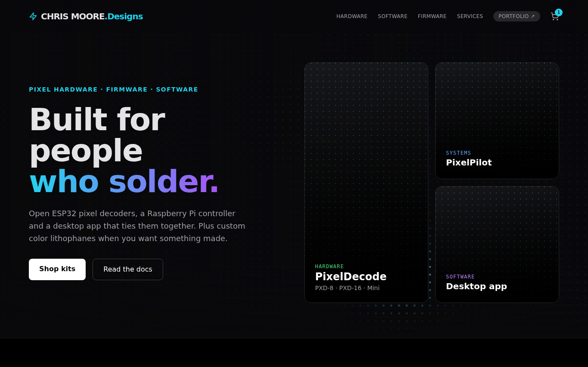
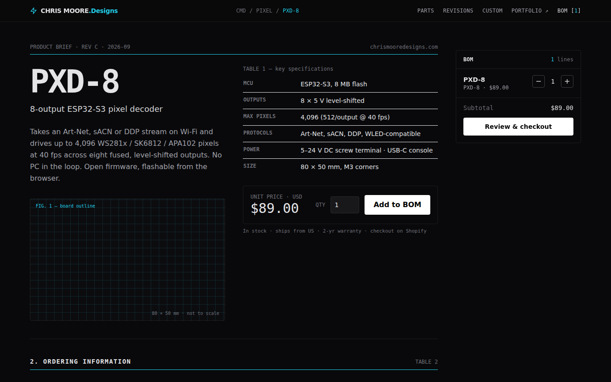
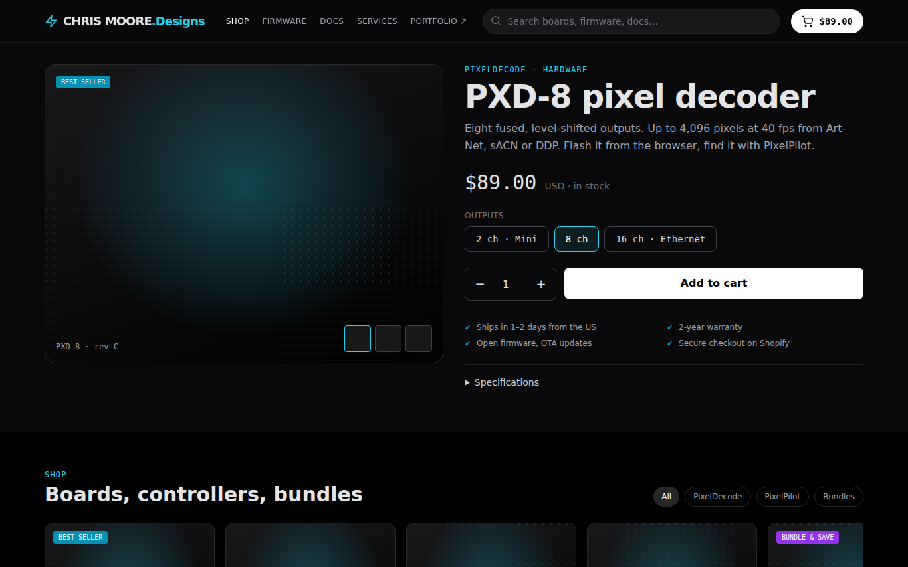
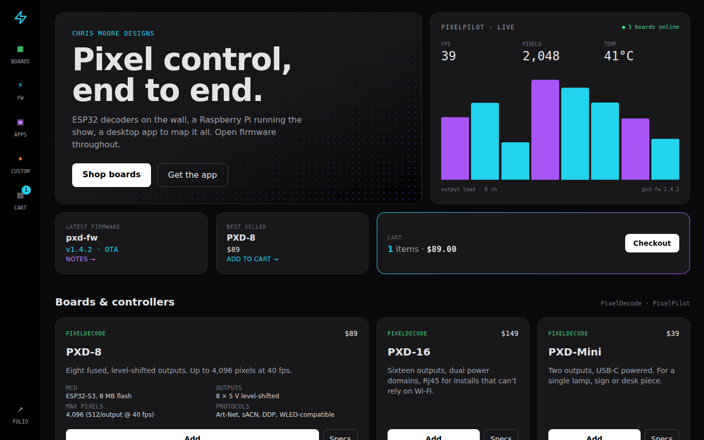
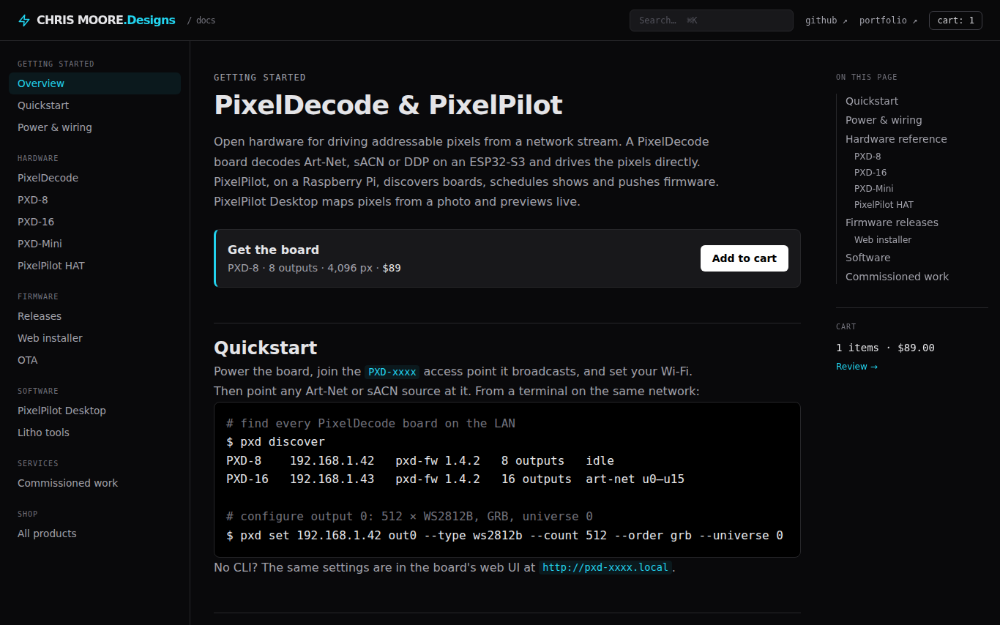

Five directions for chrismooredesigns.com
Each mockup is a complete homepage with the same content: two product families, firmware and software, services, and a working (fake) cart. They share the portfolio's palette, type and wordmark and differ in structure and tone. Open each at desktop and phone width.
Integration and security notes: docs/INTEGRATION.md

01 · Portfolio Twin
controlThe safest continuity option. Same glass nav, LED-field hero, and card grid as chrismoore.me. Cart is a nav badge with a drawer.

02 · Datasheet
dense · monoReads like a component datasheet: numbered sections, spec tables, revision history, a BOM rail instead of a cart. Almost no imagery.

03 · Storefront First
commercePrice, variant, quantity and Add to cart above the fold. Product shelf, bundle badges, trust rows. Firmware and docs become a support strip.

04 · Bento Dashboard
app-likeA control-panel feel echoing the PixelPilot UI. Icon sidebar, mixed-span tiles, a live device-status tile. Cart is a tile of its own. Most purple.

05 · Docs First
developerReads like a Starlight docs site: nav tree, reference sections with spec tables and code blocks, "on this page" outline. Products are entries in the reference; Add to cart sits inline. Least marketing tone.
- hero → quickstart → power → hardware reference
- firmware releases + web installer → software → services